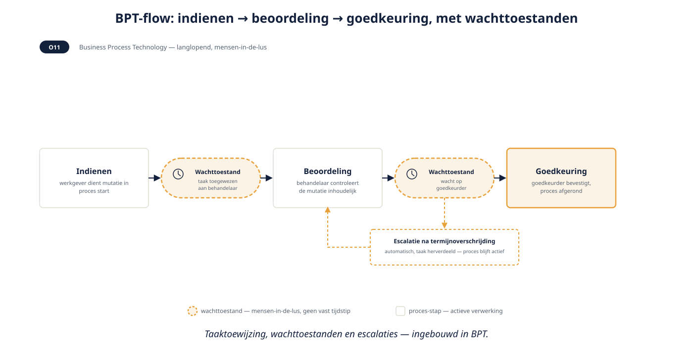
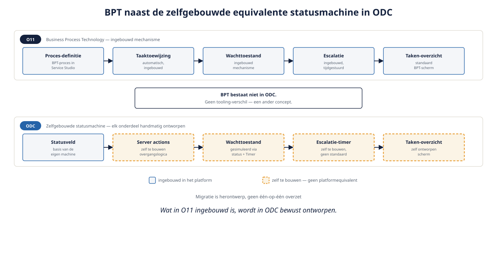

Deel 18 — Asynchroon: processen, batch, idempotentie
Slidedeck · Ductus-cursus OutSystems · Niveau 2 — Professional · deel 18 van 30 · 13 slides
Slide 1 — Title: OutSystems: Vakbekwaam
OutSystems: Vakbekwaam
Deel 18 — Asynchroon: processen, batch, idempotentie
Slide 2 — Bullets: Van statusveld naar volwassen patroon
Van statusveld naar volwassen patroon
- Deel 9: eenvoudig "nog te verwerken"
- Nu: mensen-in-de-lus processen, batch, retries
- Het meest wezenlijke platformverschil van niveau 2
Slide 3 — Section: Business Process Technology (BPT)
Business Process Technology (BPT)
Slide 4 — Bullets: O11: ingebouwd mechanisme
O11: ingebouwd mechanisme
- Langlopende, mensen-in-de-lus processen
- Taaktoewijzing, wachttoestanden, escalaties
- Meerdere O11-satellieten gebouwd op BPT

Slide 5 — Statement: BPT bestaat niet in ODC.
BPT bestaat niet in ODC.
Geen tooling-verschil — een ander concept.
Slide 6 — Bullets: ODC: zelfgebouwde statusmachine
ODC: zelfgebouwde statusmachine
- Statusveld + Timers + server actions
- Taken-overzicht: zelf te bouwen scherm
- Migratie: herontwerp, geen één-op-één overzet

Slide 7 — Opdracht: Opdracht 18.1 — BPT, statusmachine, of geen van beide?
Opdracht 18.1 — BPT, statusmachine, of geen van beide?
Drie situaties.
→ Werkboek 18.1
Slide 8 — Opdracht: Baan A / Baan B
Baan A / Baan B
A — BPT-proces bouwen in Service Studio
B — Statusmachine + taken-scherm bouwen in ODC Studio
→ Werkboek, eigen baan — het contrast zelf is het leerdoel
Slide 9 — Section: Batch-verwerking en idempotentie
Batch-verwerking en idempotentie
Slide 10 — Bullets: Idempotentie: veilig herhalen
Idempotentie: veilig herhalen
- Meerdere keren uitvoeren ≠ ander of dubbel resultaat
- Unieke identifier per aanroep
- Ontvangende kant controleert al-verwerkt
Slide 11 — Opdracht: Reflectieopdracht 18.2
Reflectieopdracht 18.2
Waarom weegt dit zwaarder dan het gebruikersbeheer-verschil?
→ Werkboek 18.2
Slide 12 — Bullets: Kernpunten deel 18
Kernpunten deel 18
- BPT: alleen O11, geen ODC-equivalent — fundamenteel verschil
- ODC: statusmachine zelf bouwen, taken-overzicht zelf ontwerpen
- Batch: dezelfde pagineringsdiscipline als reguliere queries
- Idempotentie: verplicht bij elke retry of batch
Slide 13 — Section: Volgende deel: Lifecycle en DevOps (2 dagdelen)
Volgende deel: Lifecycle en DevOps (2 dagdelen)